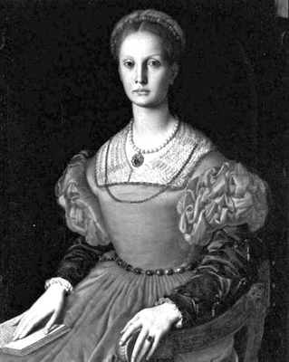
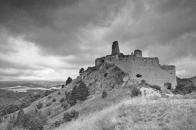

“Sen bu dünyada ne nefes alıp vermeyi ne de
Tanrı’nın ışığını görmeyi hak ediyorsun...”
Kontes’i yargılayan mahkemenin hâkimi
Avrupa’nın siyasi rengini I. Elizabeth, Korkunç İvan ve XIII. Louis’ninki gibi modern hükümdarlıklar belirliyordu. Bununla birlikte, kıtanın gözlerden uzak bir yerinde, halen eski batıl inançlardan kurtulamamış bir ülke bulunmaktaydı: Transilvanya.
Bu küçük ülke, adeta bir sır kutusuydu. Tarihin ücra köşelerinde uzanan bu toprakların, en az kendisi kadar gizemli bir efendisi vardı: Elizabeth Bathory. Ya da icraatları sebebiyle kendisine yakıştırılmış ve gerçek isminden daha fazla bilinen lakabıyla Kanlı Kontes...
Hizmetçilerine ve çalıştırdığı kızlara inanılmaz işkenceler yapan ve 650 genç kızı öldürmekle suçlanan bu kadın, tarihin en kanlı sadistlerinden biriydi. Bir dağın tepesine konuşlanmış, kartal yuvasını andıran devasa Cachtice Şatosu’nu kanlı partileri için kullanıyordu. Zamanla köylüler, bu korku yuvasını ‘Vampirler Şatosu’ olarak isimlendireceklerdi. Kan, gizem ve terör kokan bir dönemdi. Ve Osmanlı’nın gölgesi altındaki bu topraklarda garip gelişmeler yaşanıyordu.
Garip bir ailede doğdu...
Oldukça zengin ve ülkedeki en güçlü Protestan ailelerden biri olan Bathorylere mensup Elizabeth 1560’ta doğdu. Ailesinde birçok savaş kahramanı, bir kardinal ve geleceğin Polonya Kralı bulunuyordu. Ama bu sadece madalyonun bir yüzüydü. Diğer yüzündeyse, az sayıdaki asil Macar aileleri arasında süregelen yakın akraba evliliklerinden doğmuş anormal insanlar vardı. Nasıl mı? Söz gelimi Elizabeth Bathory’nin amcalarından birinin Satanist ayinlere düşkün olduğu biliniyordu. Halası Clara hizmetçilerine işkence yapmaktan zevk alan, tanınmış bir biseksüeldi, kardeşi Stephan ise ayyaş bir zamparaydı. Ailesindeki pek çok insan çeşitli ruhsal hastalıklardan muzdaripti. Elizabeth’te de çocukluğundan beri birtakım anormallikler vardı.
Dünyaya geldiği yıllarda, bölgenin tek hâkimi olan Osmanlı İmparatorluğu gerileme dönemine girmişti. Transilvanya’ya kadar uzanan Osmanlı, savaşlardan daha çok hareme ilgi gösteren padişahların tahta geçmesiyle güç kaybetmeye başlamıştı.
Elizabeth, 6 yaşındayken, kişiliği üzerinde derin izler bırakacak bir olaya şahit oldu. Şatoya eğlence için bir grup Çingene çağrılmıştı. Bunlardan biri, çocuklarını Türklere satmakla (devşirme sistemiyle alınmıştı muhtemelen) suçlanarak ölüm cezasına çarptırıldı. Tek derdi, çalgısıyla ekmeğini kazanmak olan adamın, kulakları sağır eden feryatları Elizabeth’in dikkatini çekmişti. Şafak vakti dadısından kaçtı ve adamın nasıl cezalandırıldığını görmek için şatonun dışına çıktı. Dışarıda yere yatırılmış bir at vardı. Askerler atın karnını yarıp ölüm cezasına mahkûm edilen adamı, sadece kafası dışarıda kalacak şekilde, can çekişmekte olan hayvanın içine soktular. Sonra da atın karnını diktiler! Hem at hem de zavallı adam, çığlıklar içinde çırpınarak öldü. Elizabeth bu olayı baştan sona izlemiş ve içindeki tuhaf mekanizma işlemeye başlamıştı.
Elizabeth son derece zeki bir kızdı; öyle ki Transilvanya Prensi’nin bile zar zor okuma yazma bildiği bir zamanda o Macarca, Latince ve Almancayı akıcı bir şekilde konuşabiliyordu.
Küçük yaştan itibaren, asi köylülerle başa çıkma yolunun acımasızlıktan geçtiğini düşünüyordu. Akranlarına terbiye, saygı gibi kavramlar öğretilirken, Elizabeth şiddet konusunda hiçbir sınırlamayla karşılaşmamıştı. 1571’de ‘Macaristan’ın Kara Şövalyesi’ ismiyle nam salmış, zalim ve merhametsiz savaşçı Ferencz Nadasdy ile nişanlandı.
Elizabeth oldukça hızlı gelişiyordu. Erkek giysileri giymeyi ve erkek oyunları oynamayı seviyordu. Bu esnada bir köylüden hamile kalmış, babasız olarak dünyaya gelen kızı, Elizabeth’in yaşamı boyunca bir daha ortaya çıkmamak şartıyla bir köylüye verilmişti. Elizabeth bu sırada henüz 12 yaşındaydı...
Elizabeth, 1575’te, henüz 15 yaşında iken, 21 yaşındaki Nadasdy ile Varanno Şatosu’nda evlendi. Kutsal Roma İmparatoru Maximillian’ın bile davet edildiği görkemli bir düğün yapıldı. Taze damat Ferencz, vaktinin çoğunu, evinden uzakta Türklere karşı savaşarak geçiriyordu. ‘Korkunç Beşli’ olarak da bilinen, düşmana korku salan ve kılıcı keskin beş Macar savaşçıdan biriydi. Bu esnada Nadasdy ailesinin Macaristan’daki mülkü Sarvar Şatosu, Elizabeth’e emanet edilmişti. Elizabeth’in içindeki ‘şeytan’ın ortaya çıkması için gereken şartlar artık hazırdı: Bol vakit ve gözlerden uzak bir mabet...
Güzelliğiyle etrafa nam salmış olan Elizabeth, hizmetçilerine yaptığı muamelelerle kötü bir şöhret kazanmış, şatosunu bir işkencehaneye çevirmişti. Erkekler ve kadınlar arasında sayısız âşığı vardı; ancak topraklarına girenin artık oradan çıkabilme ihtimali yoktu.
Kara Şövalye ile Kanlı Kontes çok nadir bir araya geldikleri için, evliliklerinin ilk on yılında çocukları olmadı. Ama Elizabeth daha sonraları dört çocuk dünyaya getirecekti. Akrabalarına yazdığı mektuplardan anlaşıldığı üzere, çocuklarının üzerine titreyen bir anneydi. Başkalarının çocuklarını ise sadece titretiyordu. Korkudan...
Güzelliği ile ilgilenmekten artakalan vakitlerde, zaman öldürmek için lezbiyen halası Kontes Carla Bathory’yi ziyaret edip, düzenlenen âlemlere katılmaya başladı. Bir süre sonra asıl tutkusunun gösterişli genç kızlara eziyet etmek olduğunu fark etmişti. Zihnindeki karanlık köşeleri keşfetmekten büyük bir zevk alıyordu. Bununla birlikte tek tutkusu cinsellik değildi; büyüye de ilgi duymaya başlamıştı. Tanıştığı kara büyücü Dorothea Szantes, Elizabeth’in sadist eğilimlerini arttırmıştı. Kocasına yazdığı mektupta, yeni öğrendiği büyülerden bahsediyordu:
“Siyah bir tavuğu yakala ve onu beyaz bir sopayla öldür. Kanını düşmanının üstüne sür. Eğer vücuduna süremiyorsan, herhangi bir giysisini eline geçir ve ona sür. Artık o senindir.”
Karı koca işkence alışverişi yapıyor!
Eşi Kara Şövalye de kötülükte ondan geri kalmıyordu. Onun da hobisi hizmetçilere işkence etmekti. Ancak o karısı gibi öldürmüyor, sadece acı çektirmekle yetiniyordu. Savaşmak için gittiği uzak diyarlardan öğrendiği, özellikle de Türk esirler üzerinde uyguladığı işkence tekniklerini sapık karısına öğretiyordu. Çift arasındaki bu ‘bilgi alışverişi’ Elizabeth’i çok heyecanlandırıyor, gözlerini parlatıyordu.
Katil sevgililer kendilerine has işkence teknikleri de geliştirmişlerdi. Hasta numarası yaptığından şüphelendikleri bir hizmetçiyi alıp, ayak parmaklarının arasına benzine batırılmış kâğıt parçaları koyarak ateşe veriyorlardı. Bu olaydan sonra birkaç kişi dışında hasta olduğunu söyleyen hiçbir hizmetçi çıkmamıştı.
Bir hizmetçinin kaçması Elizabeth’e göre affedilemez bir suçtu ve cezası, infaz yöntemi farklılık gösterse de, her zaman için ölümdü. 12 yaşındaki Pola bir şekilde kaçmayı başardıktan sonra yakalanıp geri getirildiğinde üstüne sadece beyaz bir elbise giydirilmişti. Kontes genç kıza yaklaşıp onu oturulamayacak kadar dar, ayakta durulamayacak kadar da küçük bir silindir kafese soktu. Kız içeri girdiğinde bir makara kafesi kaldırdı ve düzinelerce küçük çivi kafese saplandı. Kız çivilerden kaçmaya çalışıyor, ancak Elizabeth’in cücesi Ficzko ipleri hareket ettirerek kafesi çeviriyordu. Pola’nın vücudu paramparça olmuştu.

Elizabeth Bathory, ya da kendisine daha çok yakışan ismiyle Kanlı Kontes
Dehşet, acı ve ölüm: Elizabeth Bathory...
Elizabeth, kurallarını çiğneyen hizmetçilerin tırnaklarının altına iğne yerleştirirdi. Eğer kızlar yemek vaktine kadar Elizabeth’in giyeceği kıyafeti dikemezlerse, işkence kaçınılmazdı. Bir defasında terzisi olan bir genç kızın ağzını parmaklarıyla ayırmıştı. Elizabeth, kurbanları acı içinde kıvranırken mutlaka onların yüzlerini görmek isterdi. Eğer hizmetçisi kıyafetlerini güzelce ütüleyememişse, yüzü kızgın bir demirle izi hayatı boyunca silinmeyecek bir şekilde dağlanırdı. Dehşet, acı ve ölüm Elizabeth Bathory için heyecan verici şeylerdi.
Kendisi gibi sapık olan kocası Ferencz, 1603’te zehirlenerek öldü. Anlaşılan, işkenceler birinin canını fena halde sıkmıştı! Ancak Ferencz’in ölümü Elizabeth’e ibret olmadı.
Bir süre sonra Kontes’in hayatına Anna Darvulia adında esrarengiz bir kadın girdi. Bu ‘insan kılığındaki vahşi hayvan’, Elizabeth’e birçok yeni işkence tekniği öğretmişti. Uygulamalar için ısrarla genç kızları, en önemlisi de yalnızca köylü kızları seçiyordu.
Kontes Bathory, uzun simsiyah saçları ve bembeyaz yüzüyle olağanüstü bir güzelliğe sahipti. Kehribar rengindeki gözleri bir kedininkileri andırıyordu. Fakat hiçbir güzelliğin, ilerleyen zaman karşısında dayanma gücü yoktu.
Başlangıçta kendisindeki bu değişimi makyajla ve pahalı elbiselerle kapatmaya çalıştı. Ancak ne yaparsa yapsın, sürekli artan kırışıklıklarını gizleyemiyordu. Aynaya her baktığında, gördüklerinden daha çok nefret ediyordu. Bir gün başına gelen basit bir olay, Kontes’in ölümsüzlük aşkını daha da depreştirdi. Elizabeth’in saçıyla ilgilenen hizmetçilerinden biri, ya yanlışlıkla saçını çekmiş ya da efendisinin saç modeliyle ilgili yanlış bir şey söylemişti. Öfkesinden küplere binen Kontes kıza öyle bir vurdu ki kızın burnundan kan fışkırdı ve Elizabeth’in yüzüne sıçradı. Aynada kendine bakan Elizabeth, bir mucizenin gerçekleştiğini gördü: Kan yüzündeki çizgileri yok etmişti. Aslında etmemişti de Elizabeth açısından inanılması en güzel şey, o an için buydu! Kaybettiği gençliğine tekrar kavuşacağını düşünen Elizabeth buna çok sevindi. Darvulia, söylediği her şeye inanan Elizabeth’e, kaybettiği gençliğini nasıl bulabileceğini özetledi: “Genç bedenlerin kanını alırsan, onların fiziksel ve ruhsal özellikleri de sana geçer!”
Elizabeth, yardımcılarına net bir emir verdi:
“Bana çok sayıda hizmetçi genç kız bulun!”
Elizabeth bazı günler kızları yatak odasının zeminine yatırır ve onlara öyle işkenceler yapardı ki kovalar dolusu kan akardı. Bu ‘gençleşme’ seanslarının ardından, halen hayatta kalacak kadar şanslı olan yardımcıları, yerdeki kanların üzerine kül serperek, ortalığı temizlerdi.
Hastalık bile Elizabeth’in işkence sevdasına ket vuramıyordu. Duruşmasında konuşan bir tanığın ifadesiyle Elizabeth, “Hasta yatağından doğrulur, kendisine getirilen kurbanın yanaklarını ve omuzlarını vahşi bir köpek gibi dişler, ısırırdı.”
Elizabeth’in sapık fantezileri ve ebedi gençliği uğruna, on yılda 600’den fazla kız delik deşik edilmiş, kanları çekilmişti. Ancak cinayetler arttıkça, her seri katil gibi Kontes de daha az dikkatli davranmaya başlayacaktı.

Yüzlerce genç kızın akıl almaz işkencelere maruz kaldığı ‘Vampirler Şatosu’
Elizabeth kurbanlarının etlerini pencereden dışarı savurmasıyla ünlüydü. Şatonun etrafı cesetlerle doluydu ve Elizabeth’in sosyete içinde yeni işkence teknikleriyle övündüğü duyuluyordu. Bu arada çürümüş cesetlerin teşhis edilememesi için üstlerine kireç döktürüyor ve gecenin karanlığında, bulunamayacakları bir yere gömdürüyordu. Fakat cesetleri gömmekle görevlendirdiği kişi, onları taşıyamayacak kadar zayıftı ve cesetlerin bazıları oldukları yerde kalmaya başlamıştı. Çürüyen insan etinin ağır kokusu tüm şatoyu sardı. Koku öyle bir hal aldı ki artık içeride durulamıyordu.
Gariptir ki Elizabeth bir süre sonra öldürülen kızların dini kurallara göre defnedilmesi için tarz değişikliğine gidecekti! Bunun için papaz Andreas Berthoni’yi görevlendirmişti. Ancak önüne damarları kesilip kanları boşaltılmış iki kız cesedi getirilen papaz, bu görevi yapmayı reddetti; çünkü ‘bilinmeyen ve gizemli bir şekilde ölen’ çok fazla kişi gelmeye başlamıştı kendisine. Ufukta şüphe bulutları görünüyordu...
Günler ayları, aylar yılları kovaladı. Elizabeth’in sonsuz yaşam cinayetleri devam etti. Kurbanlar her seferinde, ‘ortadan kaldırılması’ kolay köylü kızları oluyordu.
Baş yardakçısı Darvulia ölünce Elizabeth, yanına bir başka habis ruh almakta gecikmedi: Büyücü Erzsi Majorova. Bu yeni ‘dost’la birlikte, arayışlar da değişecekti. Majorova, efendisine, kurbanların asil bir soydan gelmeleri gerektiğini telkin ediyordu. Ne kadar soyluluk, o kadar gençlik! Lakin soylu kızları bu tuzağa düşürmek, zavallı köylülerde olduğu kadar kolay değildi. Onları, asil ve zengin Kontes’in yanında yaşamanın çok büyük getirileri olacağına ikna etmek gerekiyordu.
Bu arada şatoda yaşanan garip olaylarla ilgili söylentiler de ceset kokuları gibi hızla yayılıyordu. Bununla birlikte birkaç asil genç kız daha Kontes’in ‘gençliğine’ hizmet etmekten kurtulamayacaktı. Soylulara kolay ulaşılamayınca, rota yine köylülere döndürüldü. Bu kez köylü kızları yıkanıp paklanıyor ve asil gibi davranmaya zorlanıyorlardı! Artık kurban yakınları da yavaş yavaş seslerini yükseltmeye başlamıştı. Bunlardan biri de kızının Kontes’e hizmet ederken öldüğünü duyan Anna Gonczy’di. Kızının cesedini görmek istemiş ama isteği reddedilmişti. Çünkü zavallı kızın bedeni işkence izleriyle doluydu. Çaresiz anne, o topraklarda hiç dikkate alınmayan değersiz bir köylü olabilirdi ama kızının başına gelenleri anlayacak kadar da zekiydi. Kontes için tehlike sinyalleri çalmaya başlamıştı...
Elizabeth güçlü bağlantılarıyla adaletin kollarının kendisine uzanmasını engelliyordu. Bölgedeki din adamlarından Aziz Janos Ponikenusz, kilise ve şato arasındaki yeraltı geçitlerini incelediğinde, yeni öldürülen kızların parçalanmış cesetleriyle dolu dokuz sandık bulmuştu. Sandıkların kapakları kilitlenmemişti bile. Kontes’in kendine güveni, aklını gölgelemeye başlamıştı. Ponikenusz, durumu üstlerine bildirmek için yazdığı raporda, Kontes Bathory için ‘yeryüzündeki en korkunç katil’ tespitini yapıyordu. Ancak rapor gitmesi gereken yere gidemedi; Kontes’in adamları işlerini iyi yapmıştı.
1610 kışında, Elizabeth hâlâ sosyal statüsünün onu kanun önünde dokunulmaz kıldığını düşünüyordu. Hizmetçileri, dört kızın cesedini şatonun duvarından aşağı savurduklarında, bir grup köylünün bu duruma şahit olduğunu fark etmemişlerdi. Elizabeth mahalli Hristiyan bakanların yaptığı uyarıyı ciddiye bile almamıştı. Sonuçta köylüler kimdi ki? Uzun müddet bu durumu istediği gibi idare etmeyi başardı. Göstermelik de olsa dindar biriymiş gibi davranıyor; dini ayinlere katılıyor, hatta ruhban okulu öğrencilerine, öldürdüğü kızların mezarları başında ağıt ve ilahiler söyletiyordu!
Çoğu kendi ailesinden miras kalan büyük bir servete sahip olmasına rağmen, Elizabeth hâlâ parasızlıktan şikâyet ediyordu. Macar soyluları şövalyelerin parasını genellikle kendi ceplerinden verirlerdi. Hükümdarın ise genelde parası olmazdı; bu yüzden Ferencz, Kral Matthias’a büyük bir miktar para (17 bin 408 altın) ödünç vermişti. Elizabeth bu parayı Macar Kralı’ndan almak istedi. Paraya ihtiyacı vardı. Nihayetinde cinayet pahalı bir işti!
Ekonomik darboğazı aşmanın çaresini, ailesinden kalan şatolardan ikisini satmakta buldu. Ailenin geri kalanı Elizabeth’in yaptıklarından daha önce de haberdardı ama artık çizmeyi aştığını düşünüyorlardı. Transilvanya prenslerinden kuzeni Kont Thurzo, ailenin diğer üyelerini toplayarak Elizabeth’in Cachtice Şatosu’nu terk edip Varanno’ya yerleşmesini ve orada ‘son günlerini geçireceği’ bir manastıra kapatılmasını istedi.
Elizabeth’le ilgili şikâyetler nihayet Macar Parlamentosu’nun gündemine gelmişti. Parlamento’nun Kontes’in aleyhine tanıklık edenleri dinlemesi üç gün sürdü. Elizabeth köşeye sıkışmıştı. Kutsal Roma İmparatoru II. Arşidük Matthias, düzeni tekrar kurmaya kararlıydı. Soyluların kanun tanımayan olağanüstü güçlerinin sonu geliyordu.
Kanlı Kontes’le ilgili şikâyetler kulağına kadar gelen Arşidük’ün bizzat kendisi, Elizabeth hakkında bir soruşturma başlattı. Elizabeth’in kuzenlerinden Gabor Bathory, Kral II. Matthias’ı devirip Transilvanya’yı genişletmek, böylece de imparatorluğun bir kısmını kendi topraklarına katmak istiyordu. Bu siyasi çatışmanın içine girecek ve bedelini ödeyecek kişiyse, Bathory soyundan Elizabeth olacaktı. Eğer suçlu bulunursa kendi mallarına da el konulacağından korkan ailesi, güvenliklerini tehlikeye atacağını düşündükleri Elizabeth’i gözden çıkarmaya hazırlanıyordu. Acıdır ki döktüğü onca kana rağmen, Elizabeth’in korku krallığının sonunu getiren, işlediği cinayetler değil, iktidar savaşının ortasına düşmüş olmasıydı.
Çanlar Kanlı Kontes için çalıyor...
Kral Matthias Elizabeth’i yok etmeye kararlıydı. Eğer suçlu bulunursa tüm mallarına el konulacaktı; en önemlisi de Elizabeth’in Kral’dan geri almaya çalıştığı borç geçersiz sayılacaktı. Parlamento, Macar Katolik soylularının baskısı altında, Budapeşte’nin Türklerin eline geçmesiyle geçici başkent ilan edilen Bratislava’da toplandı. Soylular, şikâyetleri ve sayıları 40’a varan şahitleri dinledi. Elizabeth’in barbarca faaliyetlerine köylü kızlarının yanı sıra soyluları da alet etmesi onları özellikle kızdırmıştı. Elizabeth’in parlamento üyesi kuzeni Kont Thurzo da zor durumda kalmıştı. Thurzo, Elizabeth’in, yani kendi ailesinin mallarına Kral tarafından el konulmasını önlemek için bazı deliller bulmaya çalışırken, Kral Matthias’dan hiç beklemediği bir emir alacaktı:
“Bana o kadının kellesini getirin!”
Elizabeth etrafındaki çemberin daraldığının farkındaydı; ama ilginçtir, kan dökme iştahından hiçbir şey kaybetmemişti! Kral’ı ve kuzeni Thurzo’yu zehirlemeye kalkıştıysa da başarılı olamadı.
Ve nihayet 1610 yılının 30 Aralık gecesi şatosu basıldı. Kral’ın özel muhafızları hızla ana bahçeyi geçerken, Kont Thurzo karanlıkta bir şeye takılarak tökezledi. Ayağına takılan, bir genç kızın paramparça edilmiş cesediydi. Şatonun 50 metre altında yer alan hücrelerin girişine ulaştı. Çivili demir bir kapı çıktı karşısına. İçeride hava rutubetliydi ve çok ağır bir koku vardı; fakat Thurzo görüşünü engelleyen karanlığa rağmen ileride bir sandalyenin üzerinde çömelmiş, elli yaşlarındaki kadını fark etti.
Kadın çılgına dönmüş bir şekilde ona yöneldiğinde Thurzo, sevgili kuzeni Elizabeth’i fark etmekte zorlanmadı. Elizabeth, “Bu saygısızlığının bedelini ödeyeceksin” diye bağırınca Thurzo, “Maalesef hanımefendi, ben hizmetçilerinizden biri değil, bu lanetli mekâna adalet getiren Macaristan prensiyim!” karşılığını verecekti. Bu esnada Kont’un adamları yaşanan katliamı araştırmak için odaya doluşmuşlardı. Elizabeth’in adamları yakalanmış, kendisi de odasına kapatılmıştı. Şatoda yapılan aramada, kanla dolu kovalar, yarı canlı, işkence görmüş genç kızlar ve elliden fazla ceset bulundu. Film bitmişti.
Ölümüyle birlikte efsanesi doğuyordu...
Elizabeth’in yargılanmasına Ocak 1611’de başlandı. Her ne kadar terör kumpanyasını birlikte yürüttüğü kadrolu cadılar ve yardımcıları, ‘vampirlik’, ‘büyücülük’ ve ‘pagan ritüelleri uygulamak’ gibi yapılanların doğasına denk düşen suçlamalarla yargılansa da Elizabeth, sadece adi suçlardan hâkim karşısına çıkarılmıştı. İmtiyazlı eller yine devredeydi.
Öldürülenlerin sayısının, suç ortakları tarafından 30-40 civarında olduğu iddia edilse de son dakikada ortaya çıkan Suzanna adlı bir şahit, perdeyi indiriyordu. Mahkemeye Elizabeth’in el yazısından çıkmış bir liste sundu. Listeye kaydedilen kurbanların sayısı 650’yi buluyordu. Bu vampir ruhlu kadın, tüm kurbanlarını kayda geçirmişti!
Tüm yardımcıları, ‘vampirlere’ yaraşır şekilde idam edildi. Kendisine gelince, başlangıçta kazığa bağlanıp, yakılarak idam edilmesine karar verilse de saraylı olduğu için, cezası ömür boyu hapse çevrildi. Hâkim, mahkûmiyet kararını Elizabeth’in yüzüne karşı şöyle haykırdı:
“Sen vahşi bir hayvansın. Hayatının son aylarını yaşıyorsun. Sen bu dünyada ne nefes alıp vermeyi ne de Tanrı’nın ışığını görmeyi hak ediyorsun. Bu dünyadan gitmeli ve bir daha geri dönmemelisin. Gölgeler seni karanlığa gömecek ve yaşadığın bu yabani hayattan pişmanlık duyman için orada fazlasıyla vaktin olacak.”
Elizabeth’in kan üzerine inşa olmuş sefil hayatı, 31 Temmuz 1614’te, hücresinde bir başınayken sona erdi. Daha cesedi çürümeden, günümüze kadar ulaşacak vampir hikâyeleri dört bir yana yayılmaya başlamıştı...
NOTLAR